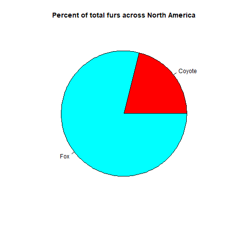
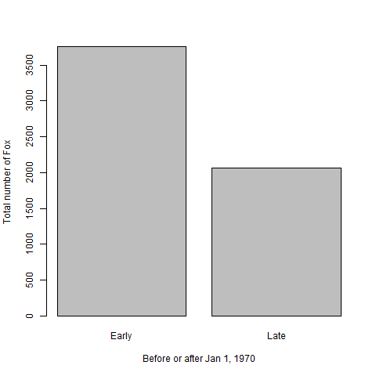
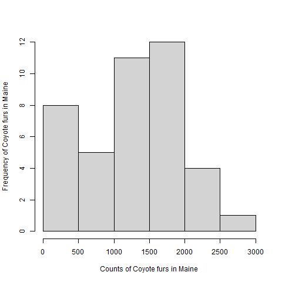
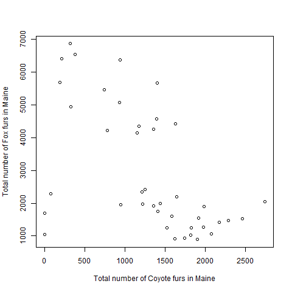

Identify and Interpret the Message
Last updated on 2022-07-25 | Edit this page
Estimated time 0 minutes
Overview
Questions
- What are four common messages usually communicated in a chart?
- What are useful charts to communicate these messages?
- How do we construct text to describe these messages?
- How does the type of data help determine the message?
Objectives
After completing this episode you will be able to:
- identify data types as discrete, continuous, or categorical
- interpret and describe the message in four common chart types
- illustrate the message of four common chart types
- use a flow diagram to choose a chart type to communicate your message
Introduction
Data Types
Charts communicate a message about data that is dependent on the type of data. Data scientists differ on the number of different data types, with some describing as many as 14 unique types. For this lesson we will keep the number of data types limited to three: discrete, continuous, and categorical. You can always dig in the finer divisions of these three latter to learn more.
Discrete data are data that can take on a limited range of values but have some quantitative information in those values. For example, four out of five stars on your favorite restaurant review websites or apps tells you that the ranking was better than three stars but not the best. The values of the ranking you give to the restaurant could only be 1,2,3,4, or 5, thus quite limited. Yet, this ranking system still conveys useful information and when your ranking is aggregated with other rankings of fellow users confidence in these rankings increases.
** As a general guideline, let’s define discrete data as any data that can take a value of no more than 30 unique values but more than 2 values (e.g., 3-32). Thirty is an arbittary value, but it is based on the precise of the measurements that can be achieved. In a discrete scale of 30 unique possibilities the maximum precision is 3.3% (1/30). Remember when it come measurement precise, lower is better but not necessarily useful.
As the number unique data values increases beyond 30 the data are characterized as continuous data. When you measure the length of something with meter stick or ruler you are likely generating continuous data. That is as long as the group of objects you are measuring range in length by more than 30 of the smallest tick marks on the stick. Or the objects could in theory range by more.
On the over extreme of limited unique values are categorical data. Categorical data do not represent quantitative information but qualitative data (i.e., information that is not a number, but a descriptive property of the system of interest). Experimental treatments like vaccine vs. placebo in clinical trials or fertilizer vs. no fertilizer effects on crop production are examples of categorical data. Categorical data can take on many different values and can sometimes contain organization structure that appear to cross over to being discrete.
To discuss these data types and later decide what charts to make and
how to make them (Episode 3) we are going use a long-term dataset
collected on the canids of North America. The data are presented in
Newsome and Ripple 2015 .
(Give a brief summary of the paper and the data)
Inline instructor notes can help inform instructors of timing challenges associated with the lessons. They appear in the “Instructor View”
b) everyone!
- -> b
- -> a
- -> c
Four Common Chart Types
Comparison Composition Distribution Relationships
Identify the message
What is the message of this graph?
{On
average across North America throughout the collection period foxes made
up 7?% and Coyotes made up 2?% of the canids} Write, pair, and share (if
possible).
What is the message of this graph?
{North
American fox populations averaged 3765 (units) prior to Jan. 1, 1970 and
2062 after} Discuss message as a group
What is the message of this graph?
{Coyote
populations in Maine ranged from zero to 2741 throughout the collections
period and had a median of 1393 and mean of 1296 units} Discuss message
as a group
What is the message of this graph?
{NEED
BETTER DESCRIPTION} Discuss message as a group
Describe the message
What are the basic components of each of the above’s message? So replace the nouns with a noun from your field of study. Does the message still make sense?
Illustrate the message
In a drawing application of your choice (including pencil and paper), draw a chart that matches the following descriptions.
- The presence of wolves promoted fox abundance more than coyote abundance in the 1980s.
- Higher mean annual air temperature decreased the ratio of foxes to coyotes across North America.
- Overall fox abundance has a log-normal distribution.
- The proportion of all canids that are coyote increases from eastern to western locations.
Use a flow chart to choose a chart for your message
The chart chooser graphic is an informative tool to help you decide
what chart types are appropriate for your message and data. 
Optional Exercise
Find a chart from your field of interest. It can be from a book, on-line or even hand drawn. Using the chart chooser to decide what type of message is being conveyed in the chart. Also, what are the data types presented in the chart?
Keypoints
- Identifying the data type helps to narrow the choices of available charts for to convey your message.
- Charts convey messages with interchangeable nouns and verbs.
- Comparison, composition, distribution, and relationships are four very common messages in charts.
- Practice with linking chart types with data types is a valuable skill